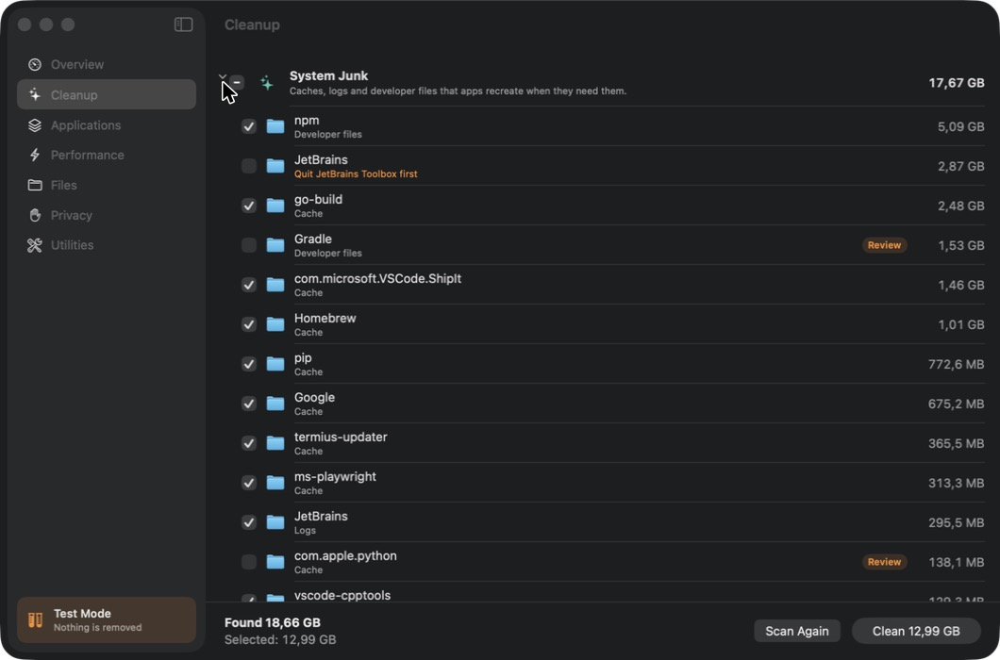

XCleaner
A native macOS cleaner with a clean, safe and simple interface.
Free and open source · macOS 14 or later

Features
Six tools in one app, in English, Azerbaijani, Russian and Turkish.
-
Cleanup
System junk, installers and downloads, the Trash, system-level junk and Mail attachments.
-
Applications
A complete uninstaller, leftovers of deleted apps, app reset and extensions.
-
Performance
Heavy apps, startup items and maintenance tasks.
-
Files
Big and old files, duplicates and a disk map.
-
Privacy
Browser data, app permissions and a background item check.
-
Utilities
Cleanup history, a menu bar monitor and hidden files.
Safety
XCleaner is careful with your files.
- Nothing is removed until you review it, and removed items go to the Trash first.
- macOS, Keychains, iCloud Drive, Mail, Photos and SSH keys are never touched.
- One copy of every duplicate always stays.
- Every action is recorded in the cleanup history.
- No tracking. The only network request is a daily check for a new release.
Install
Three steps, and updates install from inside the app.
-
Download
Download the disk image of the latest release and drag XCleaner into Applications.
-
Open Anyway
On first launch, open System Settings › Privacy & Security and click Open Anyway. XCleaner isn’t signed with an Apple Developer ID yet.
-
Full Disk Access
Grant Full Disk Access when XCleaner asks for it, so it can look inside protected folders.
XCleaner is free and needs macOS 14 or later.
Download XCleaner